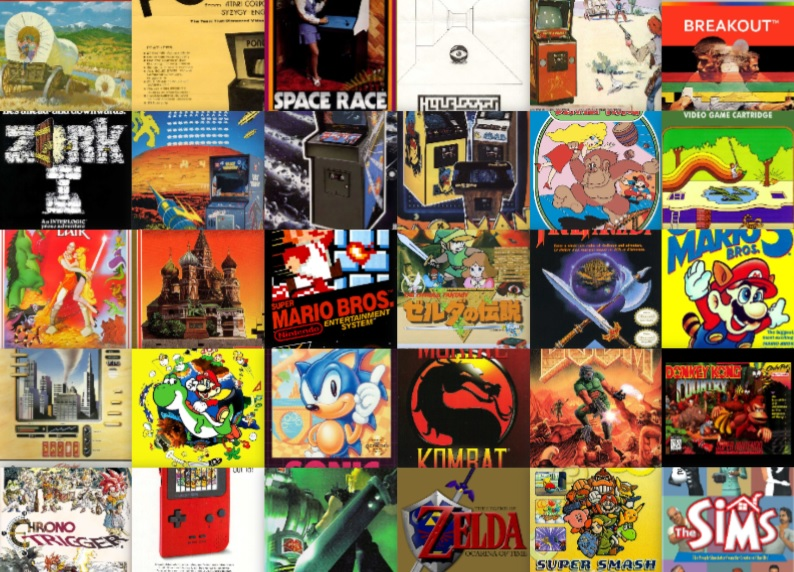

Представители
Рейтинг видеоигр - 1gai.ru
«Мир поправимых ошибок» — одна из первых работ в СССР по типологии компьютерных игр. В ней психолог Александр Шмелев предложил классификацию игроков по направленности их деятельности — функционально-психологическую классификацию.
Функционально-психологическая классификация игр по Шмелеву
| Функция | Целевая формула |
|---|---|
| Функция соревнования | «Играю, чтобы быть первым в таблице рекордов» |
| Функция самоиспытания | «Играю, чтобы познать и испытать себя» |
| Функция психотренинга | «Играю, чтобы развить у себя…» |
| Функция объекта конструктивной деятельности | «Играю, чтобы понять как сделать игру лучше» |
| Функция образования | «Играя, познаю свойства и связи предметов в мире» |
| Социально-приспособительная функция | «Все играют, и я не хуже других» |
| Рекреативная функция | «Играю, чтобы отдохнуть, переключиться, развеяться, встряхнуться…» |
| Мотивационное управление учебной (производственной) деятельностью | «Выучишь урок — сможешь поиграть» |
| Имитационный тренинг | «Играю, чтобы проимитировать свои действия в реальности» |